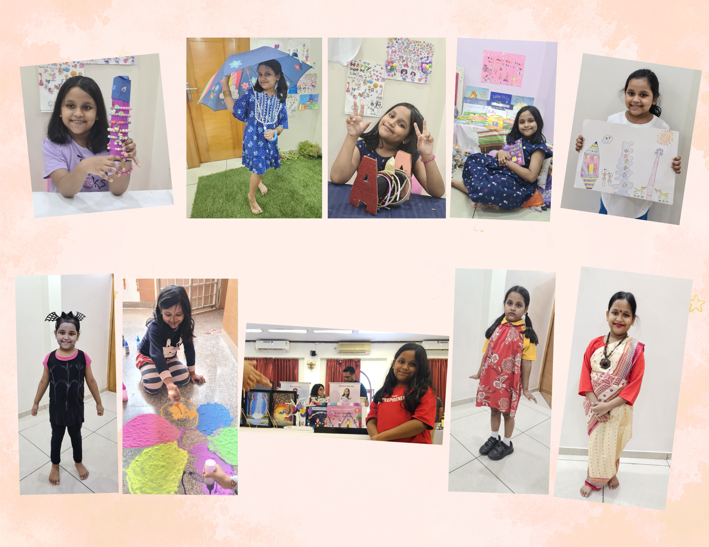
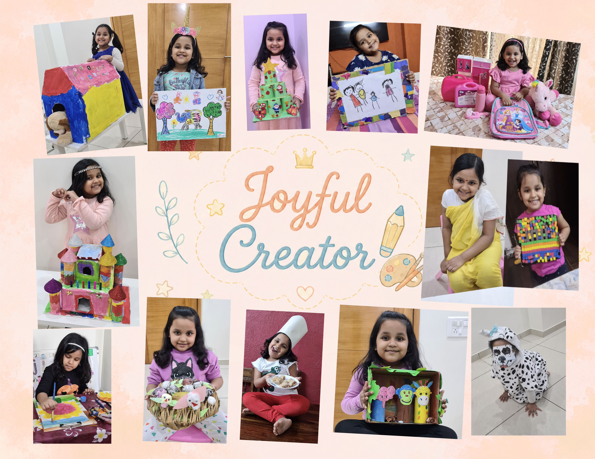
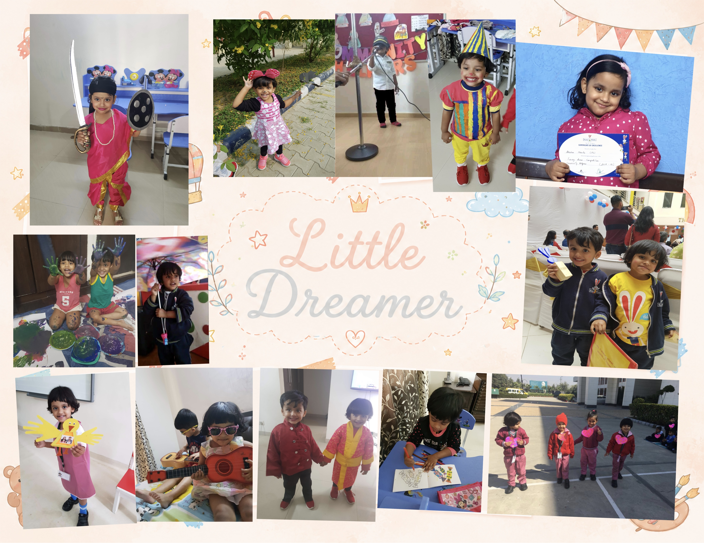

Learning, imagining, creating, and growing a little more every day.

Araina loved making unique crafts and artwork with her imagination and originality. Her curiosity and artistic spirit continue to inspire her creative journey today.

Araina loved imagining little worlds through pretend play, dress-up games, doodles, and colorful creations from a very young age. Curiosity, storytelling, and creativity naturally became a part of her everyday adventures.
